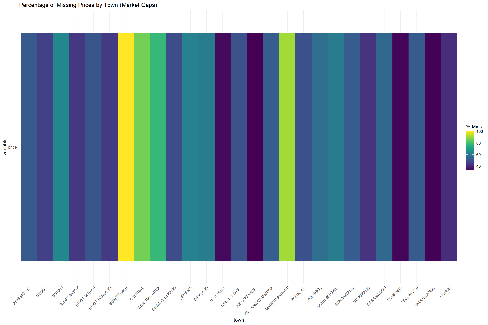
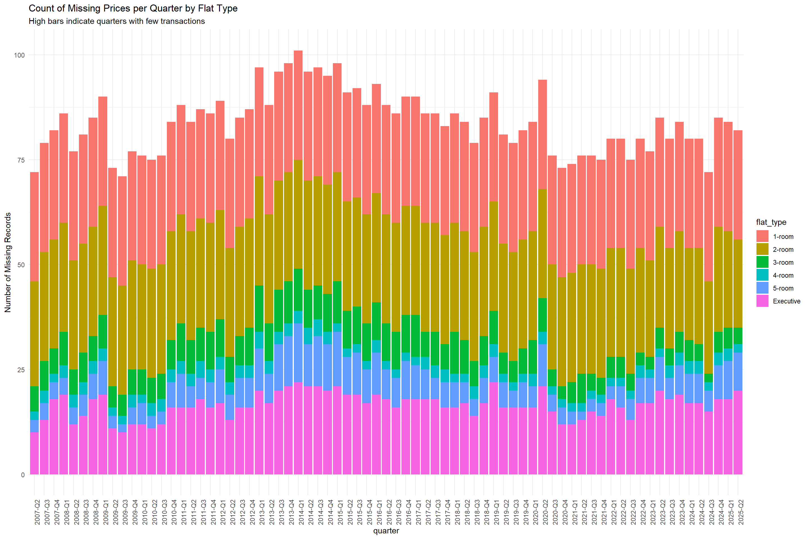
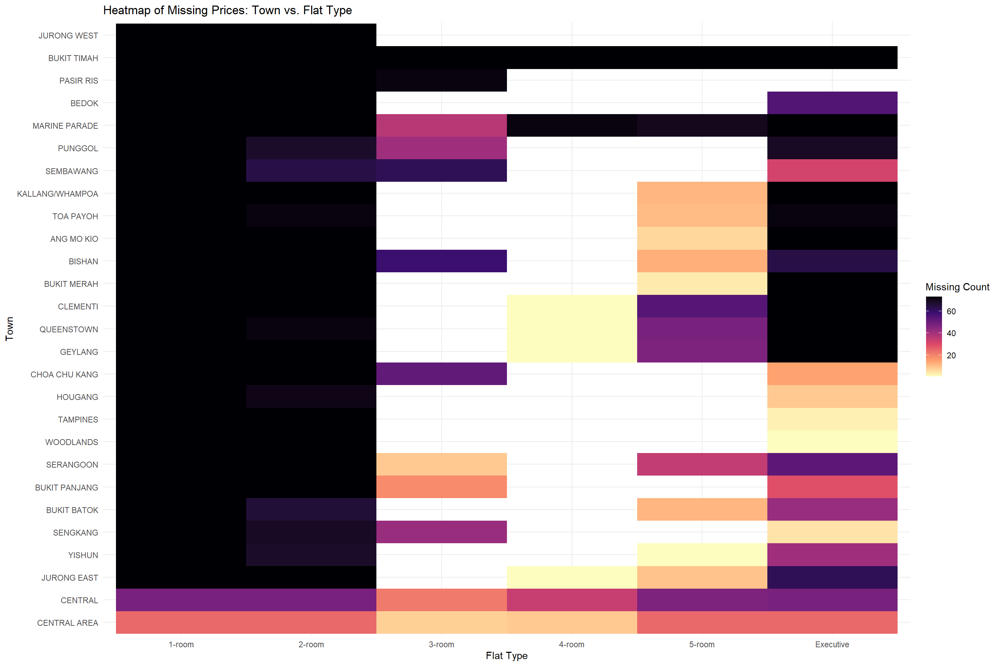

Our project uses two complementary datasets from Singapore’s Housing & Development Board (HDB): Dataset 1 — Median Resale Prices by Town, Quarter, and Flat Type (https://data.gov.sg/datasets/d_b51323a474ba789fb4cc3db58a3116d4/view) Dataset 2 — Transaction-Level Resale Flat Prices (2017–Present) https://data.gov.sg/datasets/d_8b84c4ee58e3cfc0ece0d773c8ca6abc/view
Both datasets are provided by the Housing and Development Board (HDB), an official government statutory board of Singapore. Whenever a flat is resold, an official resale application is filed with HDB and this data is then recorded and made publicly available online. Both datasets are updated quarterly, and we will focus on data from the past 5-10 years to capture recent trends and the impact of government cooling measures.
Although both sources relate to resale flat prices, they serve different analytical purposes, and using them together enables a more complete understanding of price dynamics. The first dataset provides aggregated median resale prices by town, quarter, and flat type, allowing us to analyze broad trends and patterns over time. The second dataset contains transaction-level data, which includes detailed information on each individual transaction instead of an aggregated value for the town. Crucially, the second dataset includes additional variables such as block number, approximate level of flat, floor area and lease remaining (Singapore’s public housing is typically sold on a 99-year leasehold). This granularity allows us to quantify micro-level factors influencing resale prices, such as the impact of lease duration or floor level on pricing.
2.2 Missing value analysis
At first glance, the first dataset appears to have NA and “-” to indicate missing values. This likely represents represents “Not Applicable/Not Available” and “No Transactions” respectively. The NA value likely means that these type of flats are not available for purchase in those neighbourhoods (Bishan & 1-Room Flats) and the “-” could mean that there are flats available but no purchases were made.
The second dataset appears to be cleaner with no obvious missing values. However, we will conduct a thorough missing value analysis and data cleaning process to ensure data integrity before proceeding with our analysis.
Code
# Load necessary librarieslibrary(tidyverse)
Warning: package 'lubridate' was built under R version 4.5.2
── Attaching core tidyverse packages ──────────────────────── tidyverse 2.0.0 ──
✔ dplyr 1.1.4 ✔ readr 2.1.5
✔ forcats 1.0.0 ✔ stringr 1.5.2
✔ ggplot2 4.0.0 ✔ tibble 3.3.0
✔ lubridate 1.9.4 ✔ tidyr 1.3.1
✔ purrr 1.1.0
── Conflicts ────────────────────────────────────────── tidyverse_conflicts() ──
✖ dplyr::filter() masks stats::filter()
✖ dplyr::lag() masks stats::lag()
ℹ Use the conflicted package (<http://conflicted.r-lib.org/>) to force all conflicts to become errors
Code
library(sf)
Warning: package 'sf' was built under R version 4.5.2
Linking to GEOS 3.13.1, GDAL 3.11.4, PROJ 9.7.0; sf_use_s2() is TRUE
Code
library(lubridate)library(naniar)
Warning: package 'naniar' was built under R version 4.5.2
Code
# 1. Load the first Dataset: Median Resale Prices by Town, Quarter, and Flat Typedf_median_resale <-read_csv("datasets/MedianResalePricesforRegisteredApplicationsbyTownandFlatType.csv", na =c("na", "-", "NA"))
Rows: 11388 Columns: 4
── Column specification ────────────────────────────────────────────────────────
Delimiter: ","
chr (3): quarter, town, flat_type
dbl (1): price
ℹ Use `spec()` to retrieve the full column specification for this data.
ℹ Specify the column types or set `show_col_types = FALSE` to quiet this message.
Code
# Load Singapore Geospatial Data (Planning Areas)# We use a public GeoJSON link for Singapore Planning Areas# If this link fails, you can download "Master Plan 2019 Planning Area Boundary" from data.gov.sggeojson_url <-"https://raw.githubusercontent.com/yinshanyang/singapore/master/maps/2-planning-area.geojson"sg_map <-st_read(geojson_url, quiet =TRUE) |>mutate(name =toupper(name)) # Standardize map names to Uppercase# 2. Check for Missing Valuesmissing_summary_median <- df_median_resale |>summarise(across(everything(), ~sum(is.na(.)), .names ="missing_{col}"))print(missing_summary_median)
# 3. Clean Datasetdf_median_clean <- df_median_resale |>mutate(# Convert 'price' to numeric (this handles any remaining non-numeric values)price =as.numeric(price),# Convert 'quarter' (e.g., "2007-Q2") to a Date objectdate =yq(quarter),# Standardize town names to uppercasetown =toupper(town) )# 4. Preview Cleaned Dataprint(head(df_median_clean))
# A tibble: 6 × 5
quarter town flat_type price date
<chr> <chr> <chr> <dbl> <date>
1 2007-Q2 ANG MO KIO 1-room NA 2007-04-01
2 2007-Q2 ANG MO KIO 2-room NA 2007-04-01
3 2007-Q2 ANG MO KIO 3-room 172000 2007-04-01
4 2007-Q2 ANG MO KIO 4-room 260000 2007-04-01
5 2007-Q2 ANG MO KIO 5-room 372000 2007-04-01
6 2007-Q2 ANG MO KIO Executive NA 2007-04-01
library(tidyverse)library(naniar)# ---------------------------------------------------------# 1. Refined Plot: Missingness by Town# ---------------------------------------------------------# Since only 'price' is missing, we select only town and price.# This makes the plot cleaner (removes 0% bars for quarter/flat_type).df_median_clean |>select(town, price) |>gg_miss_fct(fct = town) +labs(title ="Percentage of Missing Prices by Town (Market Gaps)")

Code
# ---------------------------------------------------------# 2. Refined Plot: Missing Prices Over Time# ---------------------------------------------------------df_median_clean |>filter(is.na(price)) |># Filter for missing rows firstgroup_by(quarter, flat_type) |>summarise(missing_count =n(), .groups ='drop') |>ggplot(aes(x = quarter, y = missing_count, fill = flat_type)) +geom_col() +theme_minimal() +labs(title ="Count of Missing Prices per Quarter by Flat Type",y ="Number of Missing Records",subtitle ="High bars indicate quarters with few transactions") +theme(axis.text.x =element_text(angle =90, hjust =1))

Code
# ---------------------------------------------------------# 3. Heatmap: Town vs Flat Type# ---------------------------------------------------------# This visualizes your "Top 10" list in a single grid.# Darker squares = More missing prices (More gaps in data)df_median_clean |>filter(is.na(price)) |>count(town, flat_type) |>ggplot(aes(x = flat_type, y =reorder(town, n), fill = n)) +geom_tile() +scale_fill_viridis_c(option ="magma", direction =-1) +theme_minimal() +labs(title ="Heatmap of Missing Prices: Town vs. Flat Type",x ="Flat Type", y ="Town", fill ="Missing Count")

2.2.1 Missing Data from first dataset
The missing data in the first dataset primarily arises from two scenarios: 1. Non-Availability of Flat Types in Certain Towns: Some towns do not have certain flat types available for purchase. For example, Bishan does not have 1-Room flats, leading to NA values in the dataset for that combination. 2. Lack of Transactions in Specific Quarters: In some quarters, there were no resale transactions for certain flat types in specific towns. This results in “-” entries in the dataset, indicating that while the flat type exists in that town, no sales occurred during that period.
Plotting the graphs above helps visualize these gaps, showing which towns and flat types are most affected by missing data. Combining this with contextual knowledge of Singapore, the towns with the most missing data is Bukit Timah, Marine Parade and Central. Bukit Timah and Marine Parade are known to be more affluent areas with a higher concentration of private housing, which may explain the lack of HDB resale transactions. The Central area is also a prime location with a significant presence of private condominiums, leading to fewer HDB resale activities.
We can also begin to analyse the effects of government cooling measures on the HDB resale market through the missing data graph. This is likely an approximate inverse representation of the housing market, with peaks in missing data indicating quarters with low transaction volumes. There is noticeable increase in the 2013-2015 period, which coincides with the government’s first round of cooling measures in December 2013. A sharp spike is also observed in 2020 Q2, which aligns with the onset of the COVID-19 pandemic and the associated economic uncertainties that likely led to a temporary halt in property transactions. We will see a more detailed analysis of these events on the other aspects of the housing market later in the project.
Rows: 220809 Columns: 11
── Column specification ────────────────────────────────────────────────────────
Delimiter: ","
chr (8): month, town, flat_type, block, street_name, storey_range, flat_mode...
dbl (3): floor_area_sqm, lease_commence_date, resale_price
ℹ Use `spec()` to retrieve the full column specification for this data.
ℹ Specify the column types or set `show_col_types = FALSE` to quiet this message.
# Clean Datasetdf_clean_transactions <- df_transactions |>mutate(# Ensure your column is actually named "month" (case-sensitive)date =ym(month),# Ensure 'resale_price' and 'floor_area_sqm' are numericresale_price =as.numeric(resale_price),floor_area_sqm =as.numeric(floor_area_sqm),# Standardize character columns to uppercasetown =toupper(town),flat_type =toupper(flat_type),# --- PARSE 'remaining_lease' ---lease_years =as.numeric(str_extract(remaining_lease, "\\d+(?= years)")),lease_months =as.numeric(str_extract(remaining_lease, "\\d+(?= months)")),lease_months =replace_na(lease_months, 0),remaining_lease_years = lease_years + (lease_months /12),# Extract the first number (start of range)storey_lower =as.numeric(str_extract(storey_range, "^\\d+")),# Extract the last number (end of range)storey_upper =as.numeric(str_extract(storey_range, "\\d+$")),# Calculate the averagestorey_avg = (storey_lower + storey_upper) /2,# --- NEW: Calculate Price Per Sqm ---price_per_sqm = resale_price / floor_area_sqm ) |># Remove intermediate columnsselect(-lease_years, -lease_months, -storey_lower, -storey_upper)# Preview Cleaned Dataprint(head(df_clean_transactions))
# A tibble: 6 × 15
month town flat_type block street_name storey_range floor_area_sqm flat_model
<chr> <chr> <chr> <chr> <chr> <chr> <dbl> <chr>
1 2017… ANG … 2 ROOM 406 ANG MO KIO… 10 TO 12 44 Improved
2 2017… ANG … 3 ROOM 108 ANG MO KIO… 01 TO 03 67 New Gener…
3 2017… ANG … 3 ROOM 602 ANG MO KIO… 01 TO 03 67 New Gener…
4 2017… ANG … 3 ROOM 465 ANG MO KIO… 04 TO 06 68 New Gener…
5 2017… ANG … 3 ROOM 601 ANG MO KIO… 01 TO 03 67 New Gener…
6 2017… ANG … 3 ROOM 150 ANG MO KIO… 01 TO 03 68 New Gener…
# ℹ 7 more variables: lease_commence_date <dbl>, remaining_lease <chr>,
# resale_price <dbl>, date <date>, remaining_lease_years <dbl>,
# storey_avg <dbl>, price_per_sqm <dbl>
Now that we have cleaned the second dataset, we can see that there are no missing values in any of the columns. This indicates that the dataset is relatively complete and does not require further imputation or handling of missing data. We can proceed with our analysis using the two cleaned datasets above.
Code
# ---------------------------------------------------------# Save Objects for the Next QMD File# ---------------------------------------------------------# 1. Create a "processed_data" folder if it doesn't existif(!dir.exists("processed_data")) {dir.create("processed_data")}# 2. Save the cleaned dataframes as .rds files# using write_rds() preserves column types (dates, factors) and geometry (sf)write_rds(df_median_final, "processed_data/df_median_final.rds")write_rds(sg_map, "processed_data/sg_map.rds")write_rds(df_clean_transactions, "processed_data/df_clean_transactions.rds")print("Data saved successfully to 'processed_data/' folder.")
[1] "Data saved successfully to 'processed_data/' folder."